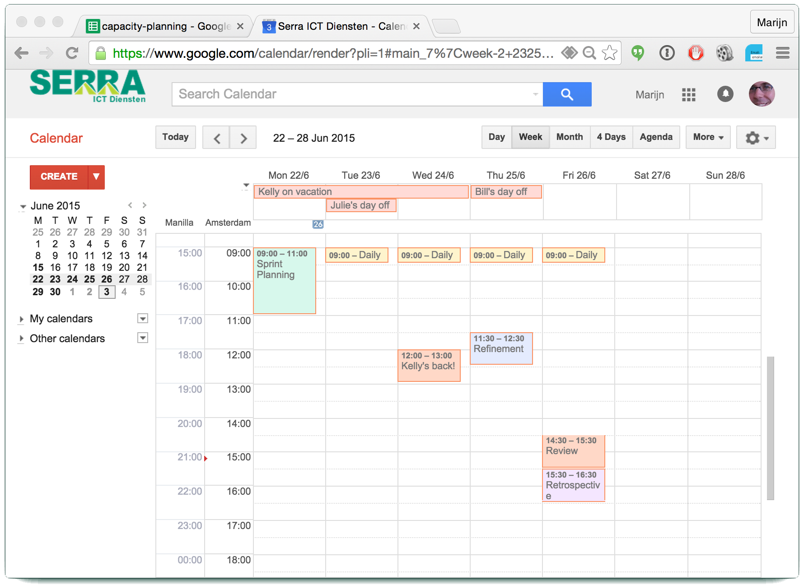

## Sprint Planning DoD
* Goal known?
* Team composition and capcity known?
* Highest business value backlog items known?
* Are there concerns regarding these items?
* Are there any other concerns?
* Given all this, what is the team's final forecast for this sprint?
Sprint Planning in Scrum
Refining and Planning
## Meeting Structure
* One week sprint, 2 hour timebox
* Declare sprint goal(s)
* Calendar, team composition and capacity
* Define *What* will be done
* Define *How* it will be done
* Conclusion and DoD
Define Sprint Goal(s)
Team Composition, Calendar and Capacity

What will be done
How will it be done
## Planning DoD
* Goal known?
* Team composition and capcity known?
* Highest business value backlog items known?
* Are there concerns regarding these items?
* Are there any other concerns?
* Given all this, what is the team's final forecast for this sprint?